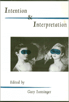

<body bgcolor="#FFFFFF" text="#000000" link="#0000FF" vlink="#CC0000" alink="#CC0000"><center><hr width="350" size="1" align="center" noshade>A complete analysis of the postmodern debate on authorial intention<hr width="350" size="1" align="center" noshade><p><a href="https://cdcshoppingcart.uchicago.edu/Cart/ChicagoBook.aspx?ISBN=9780877229711&&PRESS=temple" target="_top">Buy this book!</a> | <a href="https://cdcshoppingcart.uchicago.edu/Cart/Cart.aspx?PRESS=temple" target="_top">View Cart</a> | <a href="https://cdcshoppingcart.uchicago.edu/Cart/Cart.aspx?PRESS=temple" target="_top">Check Out</a></p><p></p></center><!--none//--><h1>Intention and Interpretation</h1>
<h3>edited by Gary Iseminger</h3>
<P>cloth 0-87722-971-6 $76.50, Oct 92, <FONT COLOR=#990033>Out of Stock Unavailable</FONT>
<br>paper 1-56639-346-9 $40.95, Nov 99, <FONT COLOR=#990033>Available</FONT>
<br>Electronic Book 1-43990-594-0 $40.95 <FONT COLOR=#990033>Out of Stock Unavailable</FONT>
<BR> 304 pp
6x9
</P><BLOCKQUOTE><I>"...an excellent and comprehensive discussion of a debate that was initiated in this century in William Wimsatt's and Monroe C. Beardsley's influential article 'The Intentional Fallacy.'...this is a splendidly conceived and very useful collection of essays. Readers will want to take issue with the arguments of individual authors, but this is to be expected in a volume at the cutting edge of a fertile philosophical controversy."</I>
<br>&#151<b>David Novitz</b>, <I>The Philosophical Quarterly</I><I></I></BLOCKQUOTE>
<p>"What is the connection, if any, between the author's intentions in (while) writing a work of literature and the truth (acceptability, validity) of interpretive statements about it?" With this question, Gary Isminger introduces a literary debate that has been waged for the past four decades and is addressed by philosophers and literary theorists in <I>Intention and Interpretation</I>.
<p>Thirteen essays discuss the role of appeals to the author's intention in interpreting works of literature. A well-known argument by E.D. Hirsch serves as the basic text, in which he defends the appeal to the author's intention against Wimsatt and Beardsley's claim that such an appeal involved "the intentional fallacy." The essays, mostly commissioned by the editor, explore the presuppositions and consequences of arguing for the importance of the author's intentions in the way Hirsch does. Connections emerge between this issue and many fundamental issues in metaphysics and the philosophy of mind as well as in aesthetics.
<p>The (old) "New Criticism" and current Post-Structuralism tend to agree in disenfranchising the author, and many people now are disinclined even to consider the alternative. Hirsch demurs, and arguments like his deserve the careful attention, both from critics and sympathizers, that they receive here.
<p>Literary scholars and philosophers who are sympathetic to Continental as well as to Anglo-American styles of philosophy are among the contributors.
<BR>&nbsp;<h2>Excerpt</h2><P>Excerpt available at <a href="http://www.temple.edu/tempress">www.temple.edu/tempress</a></p>
<BR>&nbsp;<h2>Reviews</h2>
<p><I>"This is a timely book appearing as it does when postmodernist views of the death of the author are disappearing quickly from the scene. As a collection it exemplifies the best work that is being done on this problem at the moment, and it will no doubt inspire further debate."</I>
<br>&#151<b><I>The Journal of Aesthetics and Art Criticism</I></b>
<p><I>"[T]his volume contains important articles illuminating the central debate over the role and relevance of authorial intentions in literary interoperation."</I>
<br>&#151<b><I>British Journal of Aesthetics</I></b>
<BR>&nbsp;<h2>Contents</h2><P>
<p>Preface
<br>Introduction
<br>1. In Defense of the Author &#150 E.D. Hirsch, Jr.
<br>2. The Authority of the Text &#150 Monroe C. Beardsley
<br>3. Robust Relativism &#150 Joseph Margolis
<br>4. The Impossibility of Intentionless Meaning &#150 Steven Knapp and Walter Benn Michaels
<br>5. Interpretation, Intention, and Truth &#150 Richard Schusterman
<br>6. An Intentional Demonstration? &#150 Gary Isminger
<br>7. Art, Intention, and Conversation &#150 No�l Carroll
<br>8. Wittgensteinan Intentions &#150 Colin Lyas
<br>9. Intention and Interpretation: Hirsch and Margolis &#150 Michael Krausz
<br>10. Interpreting with Pragmatist Intentions &#150 Richard Shusterman
<br>11. Irony, Metaphor, and the Problem of Intention &#150 Daniel O. Nathan
<br>12. Allusions and Intentions &#150 G�ran Hermer�n
<br>13. Intention and Interpretation: A Last Look &#150 Jerrold Levinson
<br>Bibliography
<br>Notes on Contributors
<br>Index of Names
</P><BR>&nbsp;<H2>About the Author(s)</H2>
<table><tr><td valign="top"><img src="/tempress/authors/656_au.gif" height="90" width="75"></td><td width="100%" valign="middle"><p><b>Gary Iseminger</b>, William H. Laird Professor of Philosophy and the Liberal Arts at Carleton College, has published several other books and many articles in leading philosophical periodicals. He is on the editorial board of the Journal of Aesthetics and Art Criticism and the board of officers of the American Philosophical Association.</P></td></tr></table>
<P>Contributors: E.D. Hirsch, Jr., Monroe C. Beardsley, Joseph Margolis, Steven Knapp, Walter Benn Michaels, Richard Schusterman, No�l Carroll, Colin Lyas, Michael Krausz, Daniel O. Nathan, G�ran Hermer�n, Jerrold Levinson, and the editor.</P>
<BR><H2>Subject Categories</H2>
<p><A HREF="/tempress/philosophy.html" TARGET="_top">Philosophy and Ethics</a>
<BR><A HREF="/tempress/literature.html" TARGET="_top">Literature and Drama</a>
</p>
<BR><h2 class="inpageheading">In the series</H2>
<P><I><a href="http://www.temple.edu/tempress/arts_philo.html" onMouseOver="window.status='Click for other books in this series!'; return true;" onMouseOut="window.status=''; return true;" target="_top">The Arts and Their Philosophies</a></i>, edited by Joseph Margolis.
</p><p>The volumes in <i>The Arts and Their Philosophies</i>, edited by Joseph Margolis, include: overviews of such well-defined sub-disciplines as the philosophy of music, film, and literature; studies of important figures, schools, and movements; monographs on such topics as postmodernism, texts and interpretation, reference in fiction, and the methodology of art history; explorations of the intersection of the arts and other disciplines, such as feminism and interpretation, art and politics; and translations of major works.</p>
<p align="center"><a href="https://cdcshoppingcart.uchicago.edu/Cart/ChicagoBook.aspx?ISBN=9780877229711&&PRESS=temple" target="_top">Buy this book!</a> | <a href="https://cdcshoppingcart.uchicago.edu/Cart/Cart.aspx?PRESS=temple" target="_top">View Cart</a> | <a href="https://cdcshoppingcart.uchicago.edu/Cart/Cart.aspx?PRESS=temple" target="_top">Check Out</a></p><p><font face="Arial" size="1"><a href="copyright.html" onMouseOver="window.status='Web Copyright Policy';return true;" onMouseOut="window.status=''" title="Web Copyright Policy">&copy;</a> 2015 <a href="http://www.temple.edu" target="new" onMouseOver="window.status='Link to Temple University home page';return true;" onMouseOut="window.status=''" title="Link to Temple University home page">Temple University</a>. All Rights Reserved. http://www.temple.edu/tempress/titles/656_reg.html</font></p>